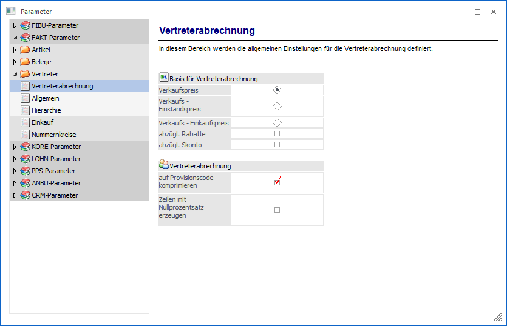
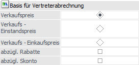
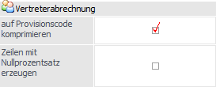

Über den Bereich "FAKT-Parameter - Vertreter - Vertreterabrechnung" können die allgemeinen Einstellungen für die Vertreterabrechnung definiert werden.
Hinweis
Standardmäßig wird das Fenster in einem "Lesemodus" geöffnet, d.h. es können die bestehenden Einstellungen kontrolliert, Änderungen allerdings nicht durchgeführt werden. Hierfür muss zunächst mit Hilfe des Buttons "Bearbeiten" der "Bearbeitungsmodus" aktiviert werden. Alternativ kann diese Aktivierung auch über das Kontextmenü der rechten Maustaste (Funktion "Applikation xxx bearbeiten") erfolgen.

Basis für Vertreterabrechnung

Ø Basis
Mit dieser Einstellung kann bestimmt werden, mit welcher Basis die Vertreterabrechnung durchgeführt werden soll. Dabei gibt es 3 Möglichkeiten:
ü Verkaufspreis
Berechnung der
Provision aufgrund des vom Vertreter erzielten Umsatzes.
ü Verkaufs -
Einstandspreis
Berechnung der Provision aufgrund des vom Vertreter erzielten
Deckungsbeitrages (Verkaufspreis minus Einstandspreis).
ü Verkaufs -
Einkaufspreis
Berechnungsbasis ist der Verkaufspreis minus dem im
Artikelstamm eingetragenen allgemeinen Einkaufspreis
Ø abzügl. Rabatte / abzügl. Skonto
Durch Aktivieren der Optionen "abzügl. Rabatte" und "abzügl. Skonto" kann gesteuert werden, ob Rabatte und Skonti von der Basis abgezogen werden sollen oder nicht.
Hinweis
Die Einstellung abzügl. der Rabatte und Skonto wird bei der Rohertragsermittlung (aktiver Rohertragsprüfung -> Einstellung bei den Artikelgruppen) mitberücksichtigt.
Vertreterabrechnung

Ø auf Provisionscode komprimieren
Wenn diese Option aktiviert ist, wird beim Belegdruck nur eine Zeile pro verwendetem Provisionscode in das Vertreterjournal eingefügt (Standardeinstellung). Diese Option ist auch die Vorbesetzung der Checkbox "komprimieren" im Register "Vertreter" im Belegerfassen.
Wird diese Option nicht aktiviert, so wird beim Belegdruck eine Zeile pro Artikelzeile in das Vertreterjournal eingefügt.
Ø Zeilen mit Nullprozentsatz erzeugen
Wenn diese Option aktiviert ist, werden beim Belegdruck auch Zeilen mit 0% Provisionscode in das Vertreterjournal eingefügt.
Wird diese Option nicht aktiviert, so werden beim Belegdruck nur Zeilen mit einem Prozentsatz ungleich 0 in das Vertreterjournal eingefügt (Standardeinstellung)